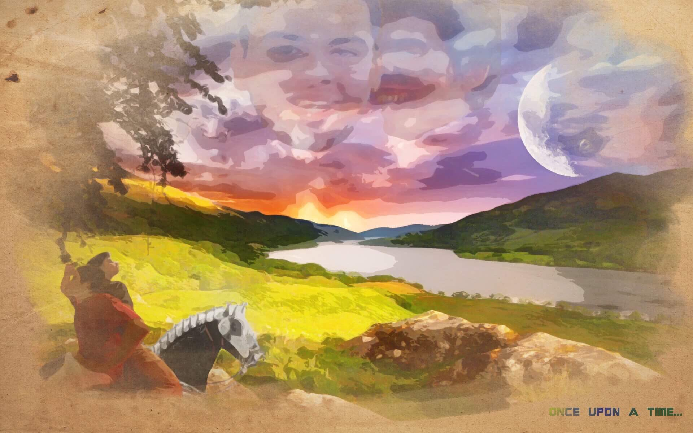

Intereses
- Taekwondo
- Practique por casi 9 años, desde los 7 hasta los 16 años de edad (tenia 15 en el video), tuve que dejarlo por varias lesiones serias en los muslos y piernas.
- Phothoshop
- Empezando como una manera de perder el tiempo, termino siendo una herramienta bastante util a medida iba creciendo 